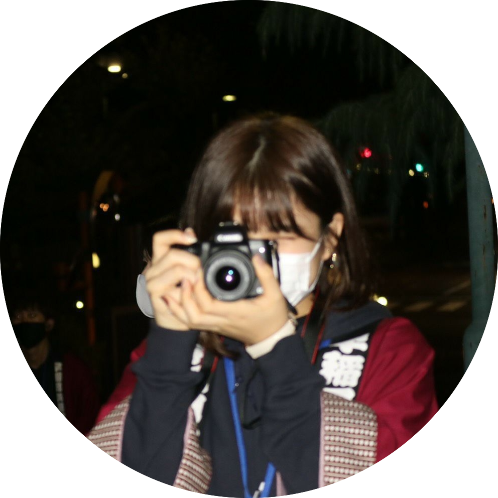
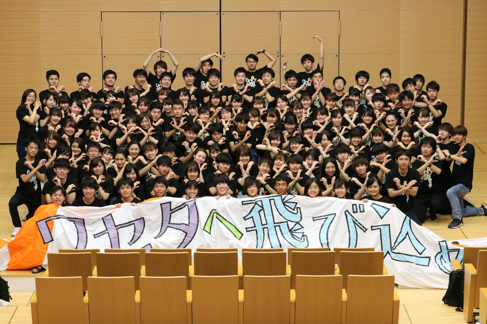
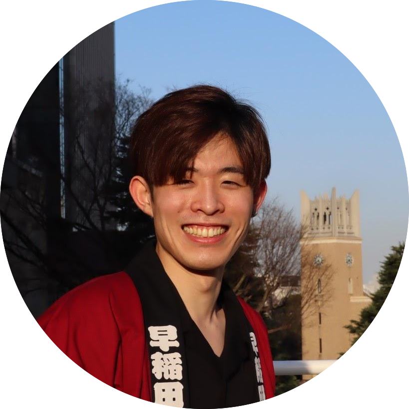
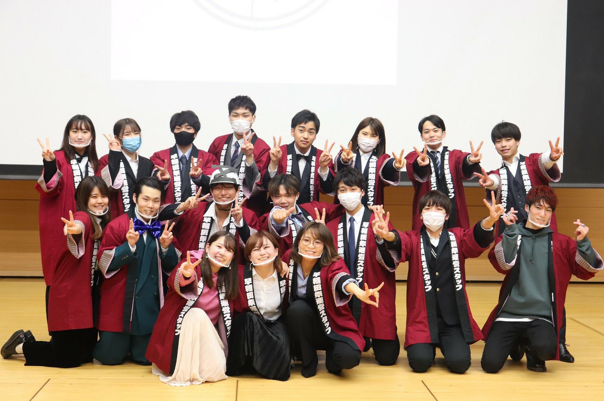
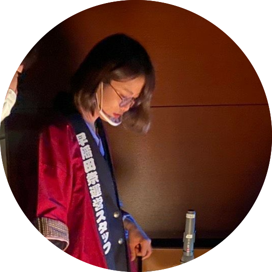
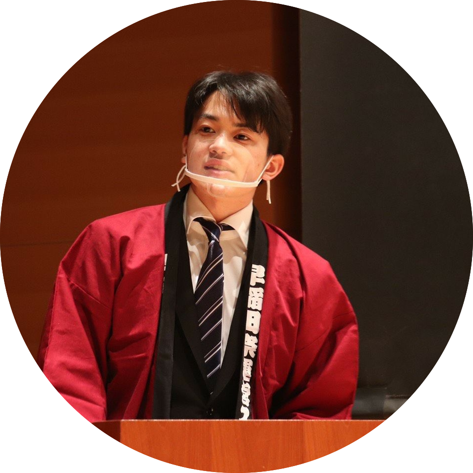
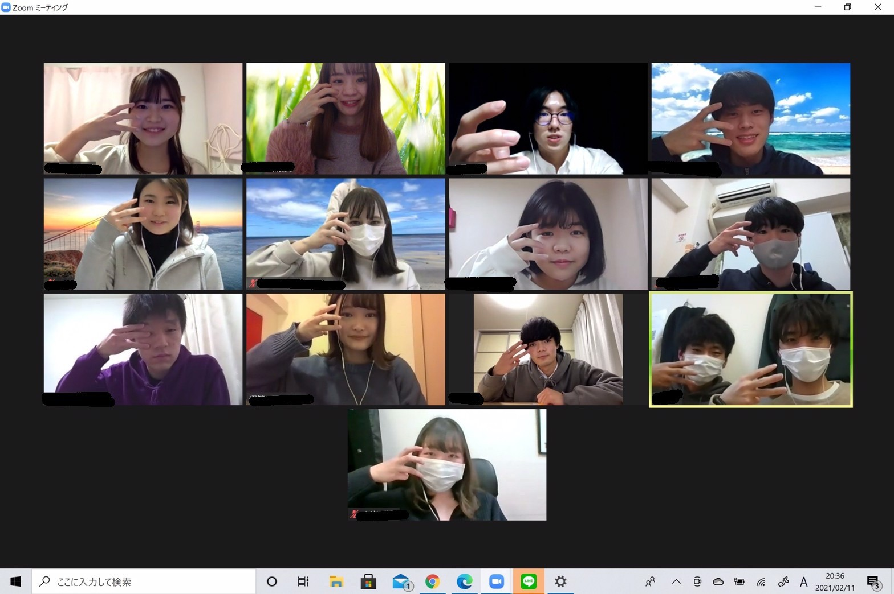
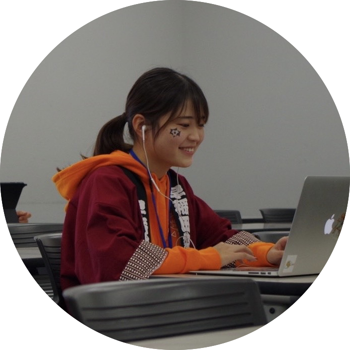
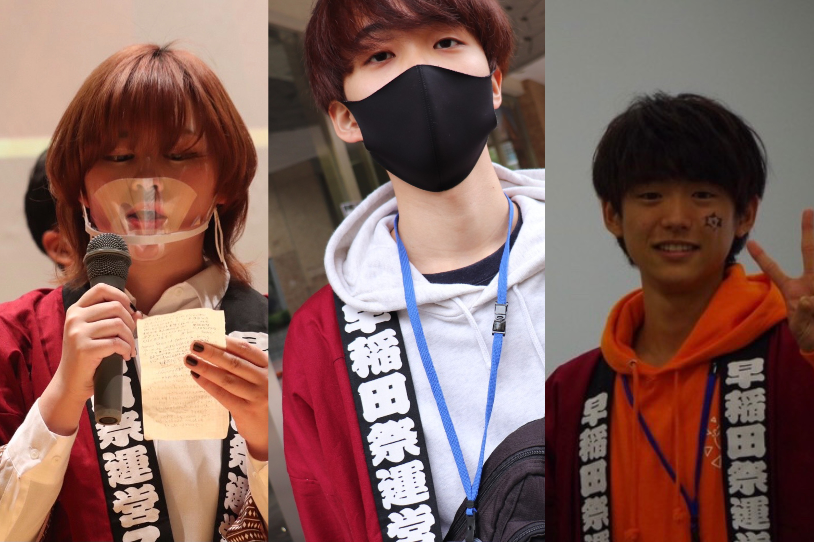
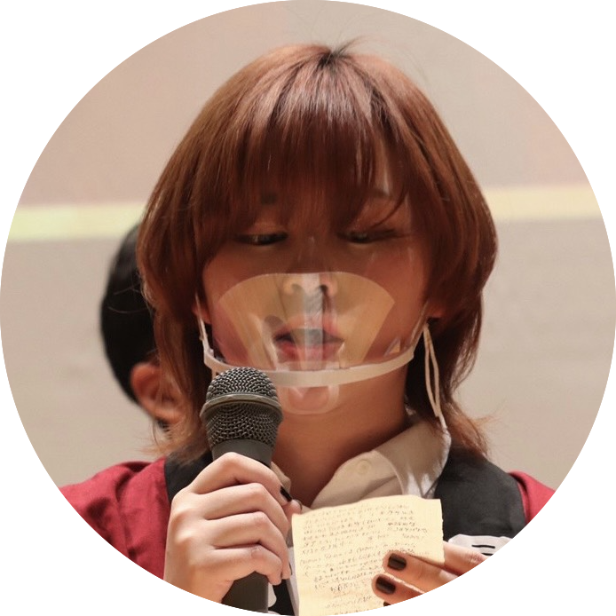

ちょっと局、超えてみない？〜超局PJについて〜
目次
1.超局PJとは？ 2.撮影・管理PJ 3.オープンキャンパスPJ 4.歴史認識PJ 5.選挙管理委員会 6.新歓PJ
1. 超局PJとは？
局を超えたPJ（プロジェクト）のこと。この記事では、PJ参加者へのインタビューを通していくつかのPJについて紹介していきます！
2. 撮影・管理PJ
早稲田祭当日の写真など、多くの写真を撮るPJ。通称、「さつかん」。
開発局2年の濱本美波さんにお話を伺いました。

・単刀直入に聞くけど、さつかんに入ったら楽しい？
楽しいです！ 写真が好きな人が集まるから、趣味の延長みたいな感覚。人に出会いたいっていう人に最適です。
・さつかんに入ろうと思ったきっかけを教えて
もともと写真が好きでした。昨年のさつかんの募集にも書いてあったけど、いろんな人と出会えるのが魅力的。
運スタは所属人数がすごく多いサークルだから、自分からもっとたくさんの人と仲良くなってみたいと思った。
・さつかんに入るためには、なにか必要なものはある？
やる気。写真が好きなこと。
カメラを持っていてほしいのはあるけど、特に必要なスキルはないかな。
・運スタに入りたいと思ってる新入生に向けてひとことお願い！
運スタでコミュニティを広げたければさつかんに入るべし！。
3. オープンキャンパスPJ

※2019年度撮影
代表（3年）小野寺佑月さんにお話を伺いました。

・OCPJってなんですか？
大学のオープンキャンパスの時期に合わせて、運スタが独自の企画を立案・運営するPJ。
・OCPJの魅力を教えてください。
運スタに入って初めての超局PJで、いろんな人と知り合えること。
・新規に向けてひとことお願いします。
同期となんかやったっていう達成感が得られる。
知り合いが増えて運スタ自体へのモチベーションがあがる。
4.歴史認識PJ


20では劇班、雑誌班に分かれて活動した歴史認識PJ、通称「歴認（れきにん）」。
劇班から参加対応局2年の緒方希さん（写真左）、雑誌班から参加対応局2年の椎本結衣さん（写真右）にお話を伺いました。

・歴史認識PJって何？
新規に運スタの歴史について認識してもらうPJ。
早稲田祭は過去に中止されたことがあって、そこからいかに復活したのかという経緯を劇と雑誌を通じて伝えます。
・歴認ってどういう雰囲気？
20では唯一の対面で活動するPJだったこともあって、仲はすごくいい！
劇班は人数の割にタスクは少なく、和気あいあいとしてみんなと仲良くなることができた。
既存から自立して新規が主役で活躍するPJだから、劇はちゃんと練習に来なきゃいけないし、雑誌はがっつりと記事を書かなきゃいけない。
タスクに対するモチベーションは必要だと思う。
・他のPJと比較して歴認の特色は？
過去の過ちから学んだことを「きちんと伝える」ことは大切なこと。
雑誌のためにインタビューをする中で、地域の方々が早稲田祭にどれだけ期待を寄せているのか肌で感じた。
祭への愛が深まるPJだと思う。
・運スタに入りたい新入生に一言お願い！
色んなことができるサークルだし、できることが多いから達成感を得られる。
歴認PJも、名前ほどお堅いPJではないから楽しめるよ！ みんなおいで！。
5.選挙管理委員会

運スタの顔である代表陣、局長を選ぶ選挙を運営する選挙管理委員会、通称「選管」。
参加対応局2年、町田美樹さん（写真右）、参加対応局2年、濱本美波さん（写真左）に伺いました。

・選管に入ろうと思ったきっかけは？
人と関わりを持ちたかったっていうのが一番だと思う。他局のことを知りたいっていうのも大きいかも！
他局のことを知りたい、選挙を運営したいっていう思いもなくはないけど、やっぱり先輩が面白そうだし、友達増えそうっていう理由が大きいかな。
・選管ってどんな雰囲気？
すごい仲良しだよ。
これってどうやるの？」ていうところから会話になって仲良くなっていったな。
タスクの時と遊びの時のみんなの雰囲気が結構違うよね。
選管はメリハリのあるPJだったね。
・選管に入ってよかったことは？
選挙を通して他局のことを知れるのはいいところかなって思う。
この局は今こういう状況なんだっていうのを幅広く知れたのが面白かった！
自分と関わりのない局の人とも仲良くなれるのもいいところ。
選挙って単純な作業かなって思ってたけど、選管をやってみたらいろんな人が動いていて、
見えないところで仕事に対してストイックに取り組める人たちと出会えたのが大きいと思う！
とにかく楽しかった！
・運スタに入りたい新入生に一言お願い！
PJは積極的に参加したら友達できるし楽しいよ！ 運スタに入ったら超局PJも入ろう！
運スタ入れば友達増えるよ！
6.新歓PJ

お互いの近況報告も兼ねて、この記事を作成した3人で深夜Zoomを開きました。
広報制作局2年、藤本奈津子 （写真左）
参加対応局2年、石橋聖輝 （写真中央）
参加対応局2年、中川彰也 （写真右）
新歓PJってどんなPJなの？ 自分たちがやってるPJについて聞くのも変だけど。(笑)
新歓PJはその名の通り新歓のためのPJ。 今年は全部で5つのチームに分かれて活動していて、
・新歓SNSの運営をする広報チーム
・1年生に向けた最初の窓口である説明会を主宰する説明会チーム
・ラジオを通じて運スタのリアルな情報をお届けするラジオ企画を受け持つラジオチーム
・オンライン上での新入生との交流イベントを企画・運営する交流企画チーム
・新入生向けの記事を作成するネット記事チーム
の5チーム。もちろん、この記事を作っているのはネット記事チームだね。
新歓PJ楽しい？
楽しいよ！ 最初、中川が免許合宿で2週間いなくなるって聞いた時には「ヤバ、1人だとキャパるかも」って思ってた。
だけど新歓PJのタスクってそんなに重くないから気軽に楽しくやれてるよ。藤本も手伝ってくれたし。
3人で一緒に作れて心強かった！
「キャパる」ってどういう意味だっけ？と思った新入生のみんなは、
過去記事「あなたは全部わかる？ 最低限押さえたい運スタ用語12選」を読んでみてね！
2人はなんで新歓PJに関わろうと思ったの？
友達を増やしたかったからかな。自分のチームには人が少ないから。
他チームの石橋と他局の藤本とも仲良くなれたし、インタビューを通して話したことがなかった同期とも話せたし、楽しいよ。
免許合宿で留守にしててもみんな優しいし(笑)
最後に、運スタに入りたい新入生に一言！
一生に一度の大きな思い出を作ろう！ 友達もたくさんできるよ。
せっかく早稲田に来たなら早稲田にしかないものを！ みんな入ってね！
超局PJについて、少しでも知っていただけましたか。
運スタをもっと知りたいという人はここをクリック！
交流企画もぜひ利用してみてください～